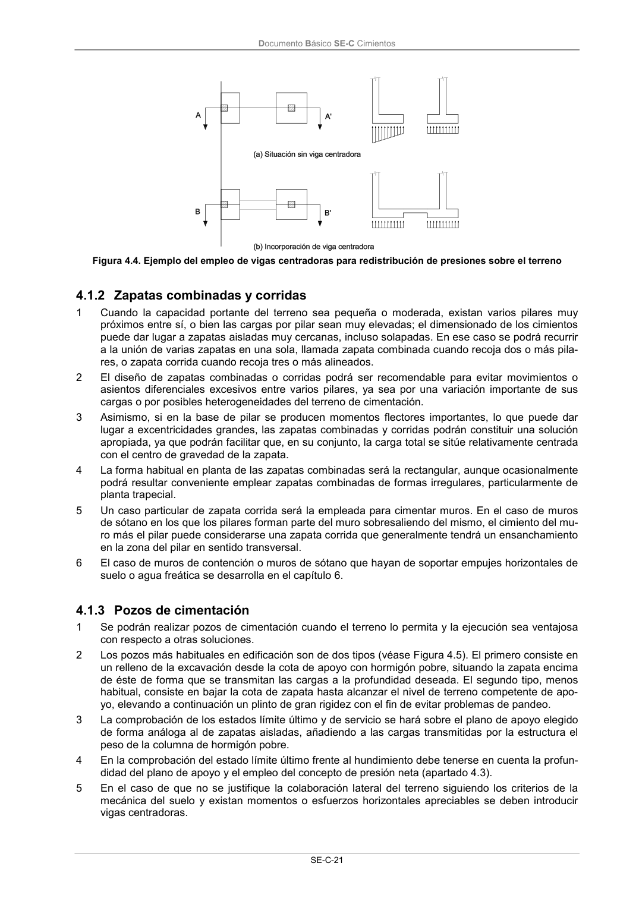

DB-SE-C · 4.1.2 Zapatas combinadas y corridas · 4.1.3 Pozos de cimentación · versión 2019-12-20
SHA256: a71133f4b0dca253e45ea3071c70f2a512354bcc5cd841bf89b1a502f567ac5e · página física 26 de 165 · métodos de encabezado
solo si están cotejados.
Formatos: Markdown · JSON de bloques · PDF p. 26 · imagen PNG
Documento Básico SE-C Cimientos SE-C-21 Figura 4.4. Ejemplo del empleo de vigas centradoras para redistribución de presiones sobre el terreno 4.1.2 Zapatas combinadas y corridas 1 Cuando la capacidad portante del terreno sea pequeña o moderada, existan varios pilares muy próximos entre sí, o bien las cargas por pilar sean muy elevadas; el dimensionado de los cimientos puede dar lugar a zapatas aisladas muy cercanas, incluso solapadas. En ese caso se podrá recurrir a la unión de varias zapatas en una sola, llamada zapata combinada cuando recoja dos o más pila- res, o zapata corrida cuando recoja tres o más alineados. 2 El diseño de zapatas combinadas o corridas podrá ser recomendable para evitar movimientos o asientos diferenciales excesivos entre varios pilares, ya sea por una variación importante de sus cargas o por posibles heterogeneidades del terreno de cimentación. 3 Asimismo, si en la base de pilar se producen momentos flectores importantes, lo que puede dar lugar a excentricidades grandes, las zapatas combinadas y corridas podrán constituir una solución apropiada, ya que podrán facilitar que, en su conjunto, la carga total se sitúe relativamente centrada con el centro de gravedad de la zapata. 4 La forma habitual en planta de las zapatas combinadas será la rectangular, aunque ocasionalmente podrá resultar conveniente emplear zapatas combinadas de formas irregulares, particularmente de planta trapecial. 5 Un caso particular de zapata corrida será la empleada para cimentar muros. En el caso de muros de sótano en los que los pilares forman parte del muro sobresaliendo del mismo, el cimiento del mu- ro más el pilar puede considerarse una zapata corrida que generalmente tendrá un ensanchamiento en la zona del pilar en sentido transversal. 6 El caso de muros de contención o muros de sótano que hayan de soportar empujes horizontales de suelo o agua freática se desarrolla en el capítulo 6. 4.1.3 Pozos de cimentación 1 Se podrán realizar pozos de cimentación cuando el terreno lo permita y la ejecución sea ventajosa con respecto a otras soluciones. 2 Los pozos más habituales en edificación son de dos tipos (véase Figura 4.5). El primero consiste en un relleno de la excavación desde la cota de apoyo con hormigón pobre, situando la zapata encima de éste de forma que se transmitan las cargas a la profundidad deseada. El segundo tipo, menos habitual, consiste en bajar la cota de zapata hasta alcanzar el nivel de terreno competente de apo- yo, elevando a continuación un plinto de gran rigidez con el fin de evitar problemas de pandeo. 3 La comprobación de los estados límite último y de servicio se hará sobre el plano de apoyo elegido de forma análoga al de zapatas aisladas, añadiendo a las cargas transmitidas por la estructura el peso de la columna de hormigón pobre. 4 En la comprobación del estado límite último frente al hundimiento debe tenerse en cuenta la profun- didad del plano de apoyo y el empleo del concepto de presión neta (apartado 4.3). 5 En el caso de que no se justifique la colaboración lateral del terreno siguiendo los criterios de la mecánica del suelo y existan momentos o esfuerzos horizontales apreciables se deben introducir vigas centradoras.
